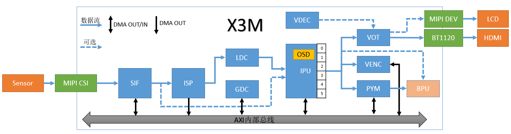
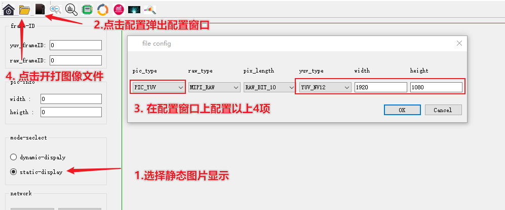

3.2.2. get_isp_data 使用说明
3.2.2.1. 程序功能
下图所示为X3M的视频数据通路框图，其中的专业名词解释请查看 多媒体开发概述-术语约定。

get_isp_data 完成 sensor 、MIPI CSI SIF 和 ISP 模块的初始化，实现从ISP模块获取视频帧数据的功能，支持从ISP模块获取YUV格式的图像。
get_isp_data 可以有效帮助用户调试sensor和X3M的ISP效果调试，在打通sensor -> SIF -> ISP 的数据通路后，再调试其他模块的功能。
3.2.2.2. 功能使用
硬件连接
旭日X3 SDB开发板拥有两个mipi host接口用于连接Sensor模组，接口说明请查阅 摄像头接口 ，请根据当前要调试的Sensor模组型号正确连接。
程序部署
把 sample/get_isp_data/get_isp_data 上传到开发板上之后，给程序赋予可执行权限chmod +x get_isp_data，然后执行程序 ./get_isp_data ，根据提示选择当前连接在开发板上的sensor类别，比如当前连接的是 F37 sensor，则选择 1。如果初始化成功，会自动获取第一帧图像（pipe0_1920x1080_frame_001.yuv）保存在程序运行的目录下（退出程序后执行 ls -l pipe0_1920x1080_frame_* 可以查看），并打印用户可以使用的命令，运行过程如下：
chmod +x get_isp_data
./get_isp_data
Horizon Robotics Sensor Test Tools V1.0
********************** Sensor Lists *************************
0 -- IMX415
1 -- F37
*************************************************************
Please select :1 # 选择 sensor
... ... # 一大段初始化日志
normal pipe_id (0)type(11)frame_id(1)buf_index(0)w x h(1920x1080) data_type 11 img_format 0
stride_size(2400) w x h1920 x 1080 size 2073600
pipe(0)dump normal yuv frame id(1),plane(1)size(2073600) # 获取第一帧图像
filedump(pipe0_1920x1080_frame_001.yuv, size(2073600) is successed
time cost 63 ms
dumpToFile yuv cost time 63 ms********************** Command Lists *************************
q -- quit
g -- get one frame
l -- get a set frames
h -- print help message
Command:
命令解释：
g： 获取一帧图像，支持输入多个
g来连续获取图像，例如输入gggg
Command: g
normal pipe_id (0)type(11)frame_id(4078)buf_index(5)w x h(1920x1080) data_type 11 img_format 0
stride_size(2400) w x h1920 x 1080 size 2073600
pipe(0)dump normal yuv frame id(4078),plane(1)size(2073600)
filedump(pipe0_1920x1080_frame_4078.yuv, size(2073600) is successed
time cost 63 ms
dumpToFile yuv cost time 63 ms
l： 连续获取12帧图像，相当于输入12个
g
Command: l
normal pipe_id (0)type(11)frame_id(4588)buf_index(3)w x h(1920x1080) data_type 11 img_format 0
stride_size(2400) w x h1920 x 1080 size 2073600
pipe(0)dump normal yuv frame id(4588),plane(1)size(2073600)
filedump(pipe0_1920x1080_frame_4588.yuv, size(2073600) is successed
time cost 56 ms
... ... # 连续的获取帧数据的打印
dumpToFile yuv cost time 56 msnormal pipe_id (0)type(11)frame_id(4609)buf_index(7)w x h(1920x1080) data_type 11 img_format 0
stride_size(2400) w x h1920 x 1080 size 2073600
pipe(0)dump normal yuv frame id(4609),plane(1)size(2073600)
filedump(pipe0_1920x1080_frame_4609.yuv, size(2073600) is successed
time cost 57 ms
dumpToFile yuv cost time 57 ms
q: 退出程序
Command: Command: q
quit
[ 256.825912] [S0][V1]sif_video_streamoff
[ 256.826439] SIF close node 1
[ 256.853045] [S0][V0]sif_video_streamoff SIF last process stream off
[ 256.853922] [S0][V0]sif_video_streamoff
[ 256.855476] hobot_dmcfreq_target: dmcfreq->rate:2666000000, target_rate:2666000000
[ 256.856460] buf:performance
[ 256.856460] , powersave_rate:2666000000, dmcfreq->pre_state:0
[ 256.857610] [S0][V0]x3_sif_close SIF last process close
[ 256.858301] SIF close node 0
[ 256.858807] [isp_drv]: camera_sys_stream_off: camera_sys_stream_off success line 1549 dev_name port_0
[ 256.860006] [isp_drv:cam]: camera_fop_release: line 115 port 0 user_num 0 camera_cdev->start_num 0
[ 256.861229] vps mipi_host1: sensor1_mclk set(1) 0 as 24000000
[ 256.861980] vps mipi_host1: sensor1_mclk set(0) 0 as 24000000
[ 256.862741] vps mipi_host0: sensor0_mclk set(2) 0 as 24000000
[ 256.863491] vps mipi_host0: sensor0_mclk set(1) 0 as 24000000
[ 256.864241] vps mipi_host0: sensor0_mclk set(0) 0 as 24000000
运行效果说明
执行程序后会获取到如 pipe0_1920x1080_frame_4609.yuv 一样命名的yuv图像
请Hobot player静态图片章节浏览图像，图像的参数配置说明如下：
浏览YUV图
按照如下图所示步骤配置选项，其中file config里面关注pic_type、yuv_type、width和height的配置，F37 配置为（PIC_YUV、YUV_NV12， 1920，1080），IMX415配置为（YUV_NV12， 3840，2160）

3.2.2.3. 程序开发
源码结构
.
├── main.c # 主程序，完成sensor列表的加载，和命令控制
├── Makefile # 编译makefile
├── module.c
├── module.h
├── Readme.md
├── sensor_handle.c # sensor 初始化、从isp中获取图像的接口
├── sensor_handle.h
├── sensors # sensor参数配置，每个新sensor在本目录新增一个文件
│ ├── sensor_f37.c
│ └── sensor_imx415.c
└── sensors.lds
编译
当前代码通过一个Makefile文件配置编译
依赖的多媒体头文件和库文件分别在BSP SDK的appsdk目录和system/rootfs_yocto/root目录下，编译时需要注意这两个依赖目录位置是否存在
安装交叉编译工具链后，执行 make 命令直接可以编译生成 get_isp_data 程序：
cd sample/get_isp_data
$ make clean # 清理源码，保持干净的代码环境
$ make
... ... # 一大段编译打印
$ ls
get_isp_data main.c main.o Makefile module.c module.h module.o Readme.md sensor_handle.c sensor_handle.h sensor_handle.o sensors sensors.lds
$ make install # 把产出物安装到 out 目录下
添加新sensor
如果有新sensor需要调试，请参考 sensors 目录下的源码文件，对应添加一个新的sensor配置即可。
以F37为例说明关键代码：
/*
* 添加sensor、mipi、sif dev、isp的参数配置
* 各结构体中参数在代码中有已经有比较详细的注释说明
*/
static int set_sensor_param(void)
{
printf("set_sensor_param\n");
/*定义 sensor 初始化的属性信息 */
snsinfo = SENSOR_1LANE_F37_30FPS_10BIT_LINEAR_INFO;
/*定义 mipi 初始化参数信息 */
mipi_attr = MIPI_1LANE_SENSOR_F37_30FPS_10BIT_LINEAR_ATTR;
/*定义 dev 初始化的属性信息 */
devinfo = DEV_ATTR_F37_LINEAR_BASE;
/*定义 pipe 属性信息 */
pipeinfo = PIPE_ATTR_F37_LINEAR_BASE;
/*定义 dis 属性信息 */
disinfo = DIS_ATTR_F37_BASE;
/*定义 ldc 属性信息 */
ldcinfo = LDC_ATTR_F37_BASE;
return sensor_sif_dev_init();
return 0;
}
/*
* 主程序遍历sensor模块时调用本函数完成sensor名和sensor参数配置接口的注册
*/
static int sensor_probe(void)
{
int i = 0;
/* 在sensor_lists里面找到一个空位置 */
for (i = 0; i < ARRAY_SIZE(sensor_lists); i++) {
if (0 == strlen(sensor_lists[i].sensor_tag)) break;
}
if (i >= ARRAY_SIZE(sensor_lists)) {
printf("sensor lists is full\n");
return -1;
}
strncpy(sensor_lists[i].sensor_tag, SENSOR_TAG, 31 > strlen(SENSOR_TAG) ? strlen(SENSOR_TAG) : 31);
sensor_lists[i].func = set_sensor_param;
return 0;
}
/* 注册sensor的模块入口，主程序在遍历sensor时会用到 */
SENSOR_MODULE_INSTALL(sensor_probe);